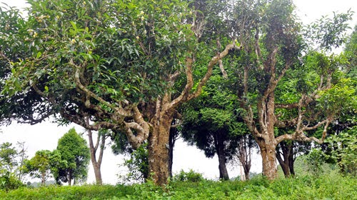
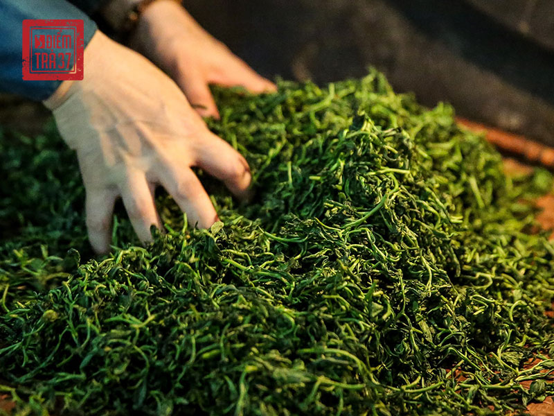
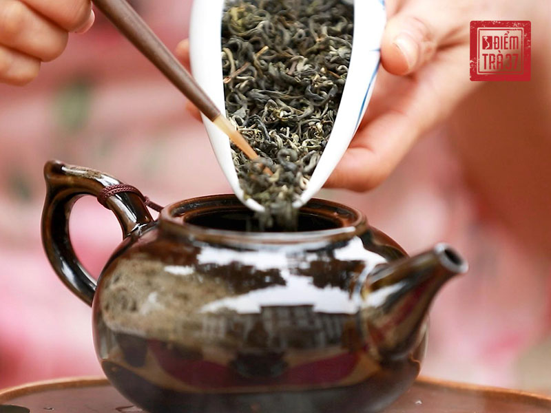

Phương Đông được coi là cái nôi của cây trà. Nếu như các nước phương Tây nổi tiếng với các loại rượu thì đối với các nước phương Đông trà được xem như nét đẹp mang đậm giá trị truyền thống.
1. Tổng quan về trà: Trà là gì?
Trà là thức uống phổ biến thứ 2 trên thế giới (chỉ sau nước uống). Trà được chế biến từ lá của cây trà (tên khoa học là Camellia sinensis). Cây trà là cây thân gỗ, sinh trưởng trên các cao nguyên vùng nhiệt đới. Khi canh tác, đa phần người làm trà trồng trà thành luống và liên tục đốn cắt chỉ để cây cao chừng 80 – 100cm để dễ thu hoạch búp và cho năng suất cao.
Cây trà là cây thân gỗ, sinh trưởng trên các cao nguyên vùng nhiệt đới
Trừ dòng trà cổ thụ phân bố chủ yếu tại các vùng núi cao, khí hậu lạnh giá quanh năm. Cây trà có thể cao đến vài mét, là dòng trà quý và mang đến giá trị kinh tế cao.

Cây trà cổ thụ tại vùng núi cao
2. Tổng quan về trà: Quy trình chế biến trà phổ biến
Trà được chế biến từ các búp non của cây trà, chủ yếu trải qua 5 bước để tạo ra thành phẩm trà khô.
Thu hái:là quá trình thu hoạch búp trà, thường gồm 1 búp và 2 lá non liền kề (1 tôm 2 lá); 1 búp và 1 lá liền kề (1 tôm 1 lá) hoặc nguyên 1 búp lá (1 tôm).
Làm héo:Là quá trình làm mềm búp trà tươi. Tùy thuộc vào loại trà thành phẩm mà phương thức làm héo có sự khác biệt: làm héo dưới nắng; sao trên chảo, hấp,…

Quy trình chế biến trà phổ biến
Vò Trà:Làm dập búp trà nhằm phá vỡ các tế bào để giải phóng các hợp chất có trong lá trà, bằng cách vò tay, cán hay ép. Quá trình này tạo cho trà thành phẩm nhiều hình dạng khác nhau (dẹt, viên tròn, móc câu,…)
Oxy hoá:Đây là quá trình diễn ra tự nhiên sau khi thu hái trà do các enzym trong lá trà bị tác động bởi oxy. Quá trình này sẽ ngưng khi các enzym bị phá hủy bởi nhiệt (sao, hấp). Kiểm soát mức độ oxy hóa sẽ tạo ra các loại trà thành phẩm khác nhau, tạo nên các hương vị phong phú cho trà.
Sao trà:Là bước triệt tiêu nước trong lá trà, ngưng toàn bộ quá trình oxy hóa và định hình sợi trà thành phẩm.
3. Tổng quan về trà: Các dòng trà phổ biến
Tùy vào cấp độ oxy hóa khác nhau mà trà thành phẩm có 4 loại chính:
Lục trà (trà xanh): Không trải qua quá trình oxy hóa
Bạch trà (trà trắng): Trải qua quá trình oxy hóa thấp
Trà ô long: Trà oxy hóa một phần
Hồng trà (trà đen): oxy hóa từ 80 đến 100%

Tùy vào cấp độ oxy hóa khác nhau mà trà thành phẩm có 4 loại chính
Ngoài ra có một số loại trà được xếp riêng bởi cách chế biến đặc biệt như trà Phổ Nhĩ (lên men trong quá trình lưu trữ trong nhiều năm); hoàng trà (phương pháp chế biến gần giống trà xanh nhưng sau khi sao diệt men thì lá trà được chất đống và hấp nhẹ).
Sự khác biệt về giống trà, vùng nguyên liệu, mùa vụ thu hái, phương pháp chế biến sẽ tạo ra rất nhiều loại trà mang hương vị khác nhau.
4. Tổng quan về trà: Thành phần hóa học chính của trà
Trà mang lại những lợi ích tuyệt vời cho sức khỏe bởi những hợp chất dồi dào, có thể kể đến các thành phần chính như sau:
Amino acids: Đây là các hợp chất hữu cơ kết hợp với nhau dưới dạng chuỗi để tạo thành protein hay đạm. Loại Amino acid có nhiều nhất trong trà là Theanine – chất tạo nên hương vị đặc trưng của trà.
Polyphenols: Trong lá trà tươi có chứa đến 40% là polyphenol. Đây là hợp chất được hình thành trong quá trình quang hợp, tạo ra vị chát của trà, cũng là thành phần mang đến nhiều lợi ích cho sức khỏe nhất.
Enzyme: Đây là thành phần có trong trà, hỗ trợ và thúc đẩy quá trình oxy hóa trà. Trong trà có rất nhiều loại enzyme khác nhau, nhưng quan trọng nhất là polyphenol oxidase và peroxidase, hai loại enzyme này dễ dàng bị loại bỏ ở nhiệt độ cao.
Caffein: Caffein giúp cung cấp năng lượng và duy trì sự tỉnh táo. Đây là thành phần tạo nên vị đắng cho trà. Độ tiết ra của caffein bị ảnh hưởng bởi 2 yếu tố là nhiệt độ nước và thời gian hãm trà. Nhiệt độ nước càng cao, thời gian hãm càng lâu thì trà càng đắng.
Các vitamin và khoáng chất: Mỗi loại trà chứa những thành phần vitamin khác nhau, cung cấp những dưỡng chất cần thiết cho cơ thể. Trong lá trà có chứa khoảng 28 loại khoáng chất khác nhau, trong đó nổi bật là flo – có tác dụng rất tốt trong bảo vệ men răng.
5. Tổng quan về trà: Các loại trà nổi tiếng tại từng quốc gia
Trà có lịch sử hình thành và phát triển lâu đời, mỗi khu vực địa lý lại phổ biến với một vài loại trà khác nhau.
Việt Nam: Lục trà (trà xanh)
Trung Quốc: Hồng trà (oxy hóa từ trên 80 đến 90%), trà Phổ Nhĩ
Nhật Bản: Matcha
Đài Loan: Trà ô long
Châu Âu và bắc Mỹ: Trà đen (oxy hóa 100%)
Trà có lịch sử hình thành và phát triển lâu đời, mỗi khu vực địa lý lại phổ biến với một vài loại trà khác nhau